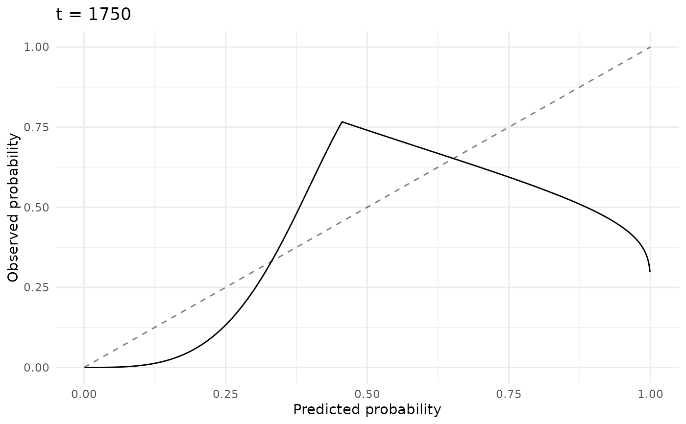
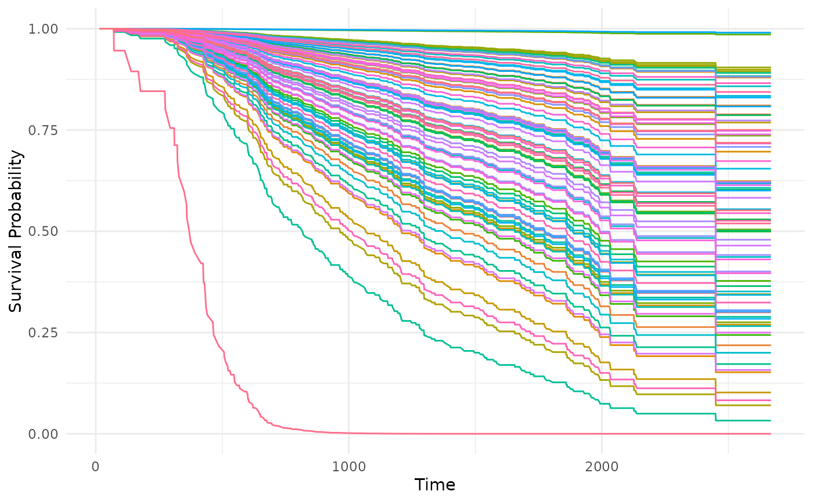
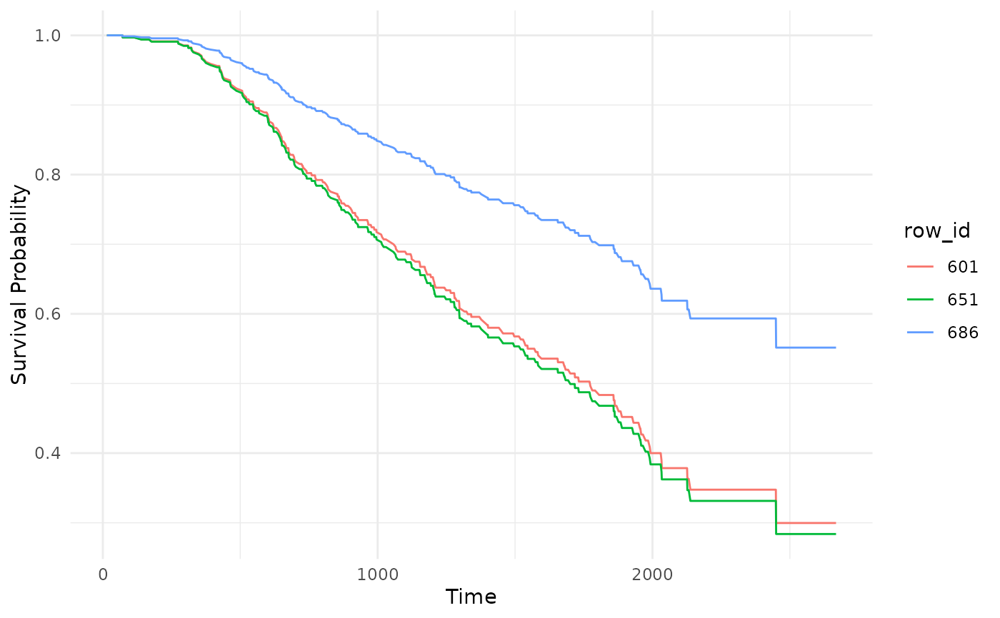
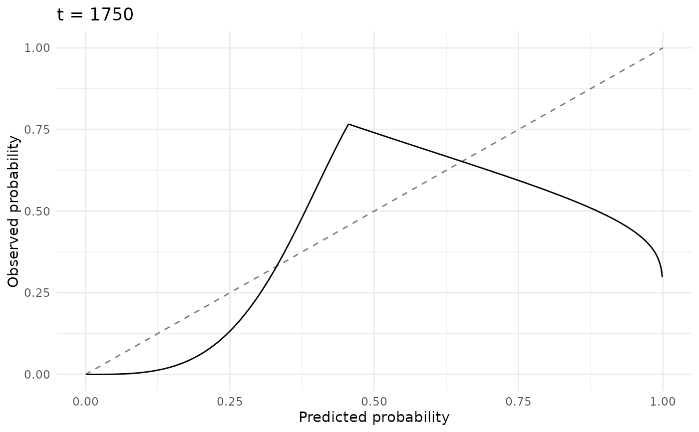
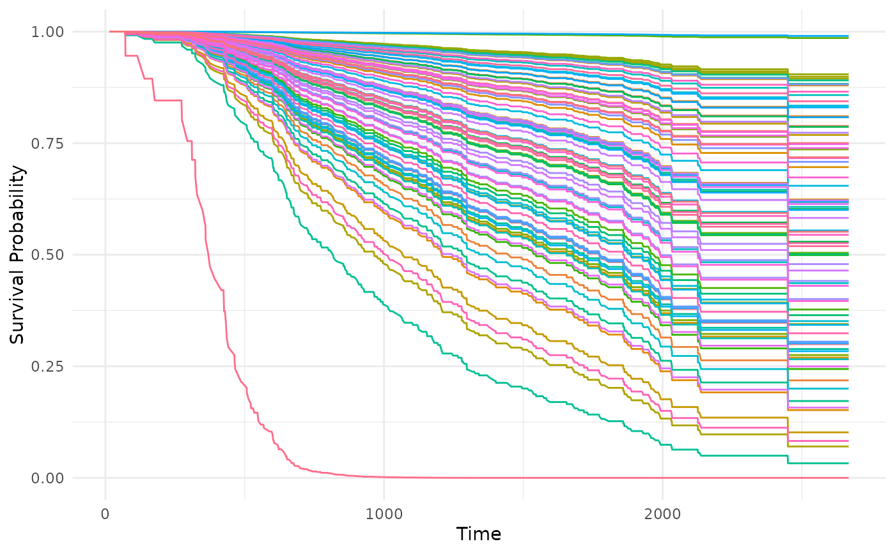
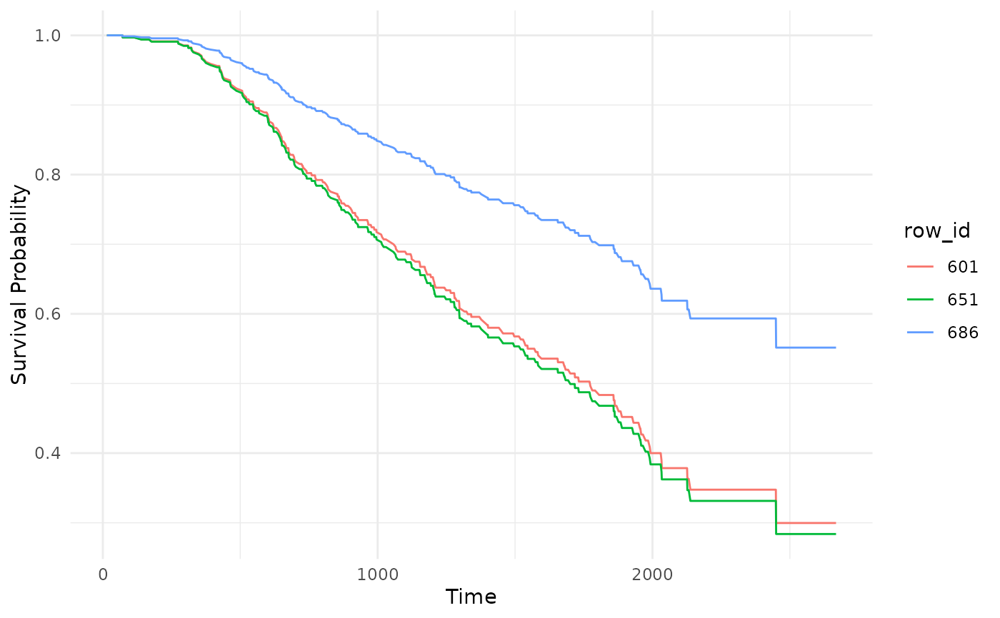

Generates plots for PredictionSurv, depending on argument type:
"calib"(default): Calibration plot comparing the average predicted survival distribution (Pred) to a Kaplan-Meier prediction (KM), this is not a comparison of a stratifiedcrankorlp."dcalib": Distribution calibration plot. A model is considered D-calibrated if, for any given quantilep, the proportion of observed outcomes occurring before the predicted time quantile, matchesp. For example, 50% of events should occur before the predicted median survival time (i.e. the time corresponding to a predicted survival probability of 0.5). Good calibration means that the resulting line plot will lie close to the straight line \(y = x\). Note that we imputeNAs from the predicted quantile function with the maximum observed outcome time."scalib": Smoothed calibration plot at a specific time point. For a range of probabilities of event occurrence in \([0,1]\) (x-axis), the y-axis has the smoothed observed proportions calculated using hazard regression (model is fitted using the predicted probabilities). See Austin et al. (2020) and MeasureSurvICI for more details. Good calibration means that the resulting line plot will lie close to the straight line \(y = x\)."isd": Plot the predicted individual survival distributions (survival curves) for the test set's observations.
Usage
# S3 method for class 'PredictionSurv'
autoplot(
object,
type = "calib",
times = NULL,
row_ids = NULL,
cuts = 11L,
time = NULL,
theme = theme_minimal(),
...
)Arguments
- object
- type
(
character(1))
Type of the plot, see Description.- times
(
numeric())
Iftype = "calib"thentimesis the values on the x-axis to plot over. IfNULL, we use all time points from the predicted survival matrix (object$data$distr).- row_ids
(
integer())
Iftype = "isd", specific observation ids (from the test set) for which we draw their predicted survival distributions.- cuts
(
integer(1))
Iftype = "calib", number of cuts in \((0,1)\), which define the bins on the x-axis of the D-calibration plot. Default is11.- time
(
numeric(1))
Iftype = "scalib", a specific time point at which the smoothed calibration plot is constructed.- theme
(
ggplot2::theme())
Theggplot2::theme_minimal()is applied by default to all plots.- ...
(
any)
Additional arguments, currently unused.
Notes
objectmust have adistrprediction, as all plottypes use the predicted survival distribution/matrix.type = "dcalib"is drawn a bit differently from Haider et al. (2020), though its still conceptually the same.
References
Haider, Humza, Hoehn, Bret, Davis, Sarah, Greiner, Russell (2020). “Effective Ways to Build and Evaluate Individual Survival Distributions.” Journal of Machine Learning Research, 21(85), 1–63. https://jmlr.org/papers/v21/18-772.html.
Austin, C. P, Harrell, E. F, van Klaveren, David (2020). “Graphical calibration curves and the integrated calibration index (ICI) for survival models.” Statistics in Medicine, 39(21), 2714. ISSN 10970258, doi:10.1002/SIM.8570 , https://pmc.ncbi.nlm.nih.gov/articles/PMC7497089/.
Examples
library(ggplot2)
learner = lrn("surv.coxph")
task = tsk("gbcs")
p = learner$train(task, row_ids = 1:600)$predict(task, row_ids = 601:686)
# calibration by comparison of average prediction to Kaplan-Meier
autoplot(p)
 # same as above, use specific time points
autoplot(p, times = seq(1, 1000, 5))
# same as above, use specific time points
autoplot(p, times = seq(1, 1000, 5))
 # Distribution-calibration (D-Calibration)
autoplot(p, type = "dcalib")
# Distribution-calibration (D-Calibration)
autoplot(p, type = "dcalib")
 # Smoothed Calibration (S-Calibration)
autoplot(p, type = "scalib", time = 1750)

# Predicted survival curves (all observations)
autoplot(p, type = "isd")

# Predicted survival curves (specific observations)
autoplot(p, type = "isd", row_ids = c(601, 651, 686))

# Smoothed Calibration (S-Calibration)
autoplot(p, type = "scalib", time = 1750)

# Predicted survival curves (all observations)
autoplot(p, type = "isd")

# Predicted survival curves (specific observations)
autoplot(p, type = "isd", row_ids = c(601, 651, 686))
